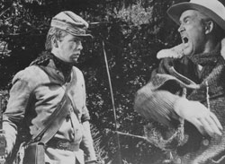
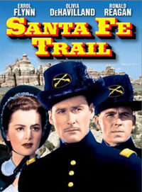
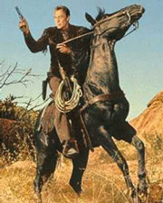
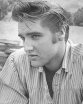

|
The producers of the movie Shenandoah were certain that
their sprawling 1965 epic about a loving Virginia farm
family caught in the middle of the Civil War would appeal to
the fans of Civil War movies and of the countless westerns
that Hollywood was churning out every year. Also, they
|

Jimmy Stewart loses his temper
in a scene from Shenandoah.
|
wanted to take advantage of the success of television, which
had grown into America's number one form of entertainment.
The most successful series on television by the early 1960s
were westerns; Gunsmoke, beginning in 1955, had been
the first, and it soon had a host of imitators. By 1959
seven of the ten highest-rated weekly series on television
were westerns. From 1960 through 1965, at least three of the
top ten television shows were westerns, and in 1965, when
Shenandoah premiered, the number one show was
Bonanza, another western.
Although Shenandoah was about the Civil War, its
look was that of a standard western. The farmhouse owned by
the main character, Charlie Anderson, played by James
Stewart, sat in the middle of a sprawling five-hundred-acre
farm. The farmers traveled through remote areas to and from
a church and some stores. They rode horses, drove buggies,
repaired fences and spread hay with pitchforks. As in many
westerns, the farm was run by a good-natured widower
assisted by his sons and daughters. A suitor courted
Anderson's daughter. Therefore, given the western look and
Civil War story, its producers were certain they had a vast
audience for their film. Educators were already complaining
about television's impact on their students, urging the
nation's entertainment industry to produce educational
stories for young people. If there had to be westerns, why
not authentic westerns that told the real story of America,
films that could be discussed in the classroom?
Shortly before the movie opened in theaters across the
country, thousands of high school and elementary school
teachers were mailed the "Classroom Study Guide to
Shenandoah," a lavish black-and-white foldout guide
that students could carry home between schoolbooks and
teachers could hang on a classroom wall. The guide was
designed to explain the plot and characters but, more
important, to let teachers and students know that this film
was actual history and not something stitched together by
careless screenwriters.
After applauding the voluminous research that had gone
into the making of the fictional Shenandoah (the
studio claimed there had been six months of research into
the history of Virginia, the Civil War and the Shenandoah
Valley, none of which was apparent in the film), the guide
proudly asserted: "In learning history, nothing beats a good
Hollywood film." It argued, too, that Shenandoah was only
the latest in a long line of Hollywood films that had
portrayed history accurately and brought the authentic story
of the world and its peoples to the public via the screen.
These "authentic" historical movies included, the guide
said, Scarlet Empress, with Marlene Dietrich as
Catherine the Great; The Private Lives of Elizabeth and
Essex, with Bette Davis; Broken Arrow, Hudson's
Bay and Custer's Last Stand (which, of course,
came about as close to historical accuracy as Laurel and
Hardy in Pardon Us).
Civil War movie historical interpretations may not have
annoyed most people, but their film locations often did.
Civil War Centennial Commissioner James Robertson Jr. may
have called Shenandoah "the best Civil War drama ever
put on film," but Virginians were furious with the producer
for not making the movie in their state. Film scouts who
toured the state apparently did not like the look of the
actual Virginia and suggested the movie be filmed in Oregon.
As a publicity writer explained: "The only place in the
world that doesn't look like Virginia is Virginia." Just a
few months later, film director Andrew V. McLaglen again
defended using Oregon as central Virginia's luscious
Shenandoah Valley. "There is no place that looks more like
Virginia than Oregon," he told an interviewer.
Many of the Hollywood studios that produced movies about
the West and the Civil War promoted their films as
historically accurate, as films that finally, after all
these years, told the "real" story of the United States.
20th Century-Fox blithely informed theater owners, the press
and the public in a promotional flyer concerning its absurd
1969 movie The Undefeated--with an odd pairing of
John Wayne and Rock Hudson as a Union and a Confederate
officer who fight together against the Mexican Army in the
1870s, that "historical facts serve as the background for
The Undefeated, a fictional account of the adventures
which probably [author's emphasis] befell many people after
the Civil War."
Civil War films decreased in number in the 1940s,
replaced by charges up Mount Suribachi, invasions of the
Philippines and amphibious landings at Guadalcanal.
Hollywood executives flooded the country with more than two
hundred movies about World War II, creating a new
subcategory within the war film genre. In World War II
films, good and evil were clearly defined, heroes believable
and bigger than life (whether they lived or died), and the
good guys, the Americans, almost always won. These films
were wildly popular with the public and crushed whatever
Civil War movie boom might have been rekindled by Gone
With the Wind.
Executives at the Walt Disney studios discovered this in
1946, when they released Song of the South, which
they believed to be a charming post-Civil War movie based on
the Uncle Remus stories of Joel Chandler Harris. The film,
which mixed live actors with animated characters, did not
earn good reviews ("drab," said the New York Times)
and was immediately denounced by the NAACP and picketed by
members of the National Negro Congress, whose officials
charged that the film rehashed all of the old racist
stereotypes that demeaned black people. (Eventually, after
several rereleases, the film did earn a respectable $13
million.)
So Hollywood writers found a whole new and majestic vista
for their beloved Civil War heroes. The historic West of the
1865-to-1890 period had everything scenery-conscious movie
producers and the moviegoing public could want--mountain
ranges, canyons, raging rivers and arid deserts. It had
bustling cities and towns such as Denver and Tombstone and a
thousand small farms and ranches spread out across the
landscape, and each valley had its own story.
Screenwriters had a dazzling array of real-life
characters for their stories: Wild Bill Hickok, Wyatt Earp,
Buffalo Bill, Calamity Jane, Billy the Kid. Best of all,
they had a built-in enemy: Indians.
For plots, they had gold rushes in California, land
rushes in Oklahoma, cattle drives, range wars, bank holdups,
evil villains, heroic marshals, dance hall girls, fires,
mines, duels in the sun, singing cowboys like Gene Autry and
Roy Rogers ... and Indians.
The West was a blank page for Hollywood. Few Americans
knew anything about the real story of the West. They only
knew what they had read in high school textbooks, which paid
little more than superficial attention to the West and
concentrated on events rather than social culture, and on
legend. That made Hollywood's job easy.
To audiences in post-World War II America, the Old West
was a land they learned about from dime novels, traveling
Wild West shows and endless magazine and newspaper stories
full of tales of good guys in white hats and bad guys in
black hats. To Americans, the West was one long wagon train
full of hearty frontiersmen and their loving wives and kids
trying to make a new start in a vast new country, battling
the elements and the Indians. The frontier folk always
triumphed. It was, as historian Frederick Jackson Turner
wrote in a line that Gary Cooper, John Wayne and John Ford
would have loved, "the meeting point between savagery and
civilization."
The wide-open West, opened wider still by the movies, was
a nation within a nation.
John Wayne, greatest cowboy actor of them all, said he
saw all westerns as Homeric epics, the stories of great

John Wayne
|
journeys. The American western movies were popular not only
in America, but all over the world, possessing, according to
cinematic historian William Pilkington, "a universal appeal
to a universal imagination." French film critic Andre Bazin
called western movies "American odysseys" and felt their
strength was in their morality and the recurrence of
familiar and accepted legends.
Best of all, from Hollywood's point of view, from about
1946 to 1975 the Old West was a marvelous emotional and
cinematic safety valve from contemporary anxieties about the
Cold War and reality, as the movies always had been. Here,
though, in the dust-covered streets of Dodge City and the
bars of Deadwood, screenwriters had a chance to create a
kingdom for escapist entertainment. Film historian Phil
Hardy explains: "At a time when frustratingly complex issues
like the bomb, the Cold War, the House Committee on
Un-American Activities investigations and the Suez crisis
were being raised, the West remained a simple, unchanging,
clear-cut world in which notions of good and evil could be
balanced against each other in an easily recognizable
fashion.
The celluloid West was also the perfect place to move the
homeless Civil War soldier. Even though the market for
movies strictly about the Civil War had dried up, the new
market for the western was the perfect place for the
transport of Billy Yank and Johnny Reb, with all their
historical and emotional baggage.
Hollywood's Western myths had some accurate historical
grounding. Turner, whose papers and book on the American
West became the bible of Western history in the 1910-1940
period, had dubbed the men and women who moved west members
of "a new order of Americanism." Screenwriters could easily
adapt old characters and old adventures to that new order.
The boys in blue and gray fit nicely. The movement of the
real Americans of North and South right after the Civil War,
and their celluloid counterparts, was a natural transfer,
"the shifting of a battleground from the ravaged South to
the still relatively empty West," according to Jenni Calder.
It was also a shift from the old plantation, with its
dripping Spanish moss, wide verandas and rows of slave
cabins to an open, and West with plains, mountains and
deserts. The Plantation Myth's setting had changed and the
myth would as well.
There was a new breed of protagonists, men who had been
hardened by the Civil War as people and as soldiers. The
homesteader and rancher of the West, who never used his gun
for more than hunting or, infrequently, to ward off Indians,
was now joined by former Soldiers who knew how to use guns
quickly and efficiently. Some of them brought knapsacks of
hatred to the plains of the West, too, and often wound up in
arguments or fistfights. The introduction of these men into
a brand-new society trying to build its own foundations
created chaos and problems in the actual West and made for
marvelous plotlines for the celluloid West."
The post-World War ii westerns were distinctly different
from the silent westerns and the 1930S shoot-em-ups. They
were psychological studies in which characters were no
longer all good or all evil. Dance hall girls were now
complicated dance hall girls. Villains, especially, became
multi-layered, with deep psychological reasons for their
behavior and, often, a shadow of justice or goodness to them
that made audiences like them. Heroes now needed something
beyond survival to fight for, whether it was their sense of
honor, the law or the construction of a new empire. The new
hero was also involved with families, whether his own
family, others he defended or, in a string of films,
families that traveled across the West in wagon trains. A
new sense of family took over from the lonely rider who
galloped over the horizon.
This psychological shift opened up the new, cinematic
westerns even more for fictional Civil War characters, from
Nathan Brittles to Johnny Yuma to Ethan Edwards, who trotted
out of the War between the States and into the sunlit West
with saddlebags full of emotional complications.
The biggest reason why the Civil War characters slipped
so seamlessly into the western movie was that westerns were
already about myths--gargantuan ones. Americans might be
weak in the history of the Old West, but that history had
been mythologized to the point where reality and legend
could not be divided. And everyone was familiar with the
myths.
"If, as it is said, poetry is more real than history, the
literary and iconographic poetry about the American west may
rightfully share a place with historical chronicle in
depicting the American western experience," said historian
Rita Parks in explaining why audiences so readily accepted
Hollywood's version of the West.
Even public officials were eager to embrace Hollywood's
West, rather than the real West. Gale McGee, a U.S. senator
from Wyoming, was one of them. He wrote: "There is no area
of the country with a history more interesting and more
distorted in the public mind than the American West. The
struggles of the pioneer American to conquer the last
frontier have caught and retained the imagination of the
public to such an extent that a veritable mythology has
developed around the Old West until dreams and reality have
become all but indistinguishable."
Hollywood's Civil War western characters fell into
several distinct groups:
1. The embittered reb. He was once a hard-fighting
Confederate soldier who firmly believed in the cause of the
South. He has moved west because his home was destroyed or
his family killed by Yankees, or because he did not want to
live in a town or county ruined and occupied by the Union
army. The world and culture he cherished has been destroyed
by the war, whether the physical world of his farm or the
emotional world of his bygone society. In frustration, and
with nowhere else to go, he has sought a new life on the
plains, carrying all the old animosities with him.
2. The hard-fighting Union veteran who is pleased that
the North won the war. The antithesis of the embittered reb,
he has moved west not because of ruin at home but because of
opportunity. He may have worked for the railroad in the
West, become a marshal or purchased land and settled down.
He is happy in his new life and, whenever he encounters
former Confederates, tries to live harmoniously with them,
which isn't always easy. The understanding Yank and
forgiving reb, confronted with danger from either Indians or
outlaws, team up to fight a common foe, forgetting their
blue and gray differences.
3. The cavalryman. The men of the cavalry were drawn from
both the Northern and Southern armies and were thrown
together under the same flag, but a flag flown in a new
country, the West. These men, usually officers, tried their
best to live in a brand-new village-the isolated fort. They
conducted minor skirmishes with each other but put their old
feuds aside to fight together against the Indians.
In novels, many cavalry officers constantly referred back
to the Civil War, and that formula was adopted by
screenwriters. There were thousands of these references to
explain the character through his war experience, whether it
was a year or a generation before. A cavalry officer,
O'Gara, in Michael Straight's Carrington, looks down
at his dusty boots at a fort and remembers lying in the mud
at Shiloh and watching a rebel soldier try to pull them
off." Howard Fast's novel The Last Frontier was a
story about Dodge City, the wide-open and dangerous Kansas
town that became the setting for so many novels, movies and
television series. Explaining the trouble always caused by
riders on cattle drives that went through Dodge, Fast wrote
that "the Texas hands by the hundreds fought the Civil War
over."
In Black Silver, William Cox's transplanted rebel
blames his woes on the war. "Ever since he'd come out of
that Yankee prison he had been getting into one thing and
another that didn't pan out," Cox wrote. "It was as though a
curse had been put on him by the blue-jacketed devils who had
beaten him and starved him in Maryland."
Screenwriters often created brand-new Civil War
characters and added them to westerns to make the films more
interesting. They also believed that Civil War characters
added genuine substance to western stories. Another favorite
trick was to identify a character simply as a former
Confederate or former Yankee, tying the war into the story
as part of his past, so that all of the moviegoer's already
deeply ingrained feelings about the war could be utilized as
emotional background. Making a character a Civil War veteran
helped screenwriters, too, because that simple, immediately
recognizable shorthand reference could save minutes of
plot-building dialogue.
It was not that the cotton-field lore had changed;
writers just moved past it. The post-Civil War western
presented the rebels as brave men who, now that the war was
over, sought new lives and a clean slate in the West. Some
were assimilated in the new West, and new nation, but some
were not. They were bitter and angry men who did not accept
the loss of the war or the alien world of the West where
they found themselves, and rejected reconciliation. Whenever
that happened, audiences understood that such men were wrong
and those who accepted reconciliation were right.
The embittered rebel quickly became a recurring character
in films about the Old West. He appeared in so many ways in
so many movies and television series in the late 1940s,
1950s and 1960s that when producer Charles Wilson decided to
adapt the Owen Wister novel The Virginian for
television as an unprecedented ninety-minute weekly dramatic
series in 1962, he changed the setting from the 1860s to the
1890s. "I want to avoid the embittered Civil War veteran
heading west," he said.
There were many such men on the move. Perhaps the most
complex bitter Civil War soldier to move west and emerge in
a western movie was Ethan Edwards of The Searchers,
played by John Wayne. A hulking former Confederate army
officer, the brooding Edwards arrives at his brother's Texas
ranch, rich, in 1868, with no explanation of his whereabouts
for the last three years. His brother and family are soon
massacred by Indians. Edwards and a part white, part Indian
nephew, Martin, decide to chase the Indians and retrieve the
little girl they kidnapped, Debbie, who is Edwards's niece.
Edwards hates all Indians and is a complicated neurotic. He
is determined to find his niece, now a teenager, and kill
her because she has probably had sex with Scar, the Indian
chief who seized her. The two search for Debbie for five
long years, throughout the West, in rain and snow, across
deserts and mountains, before they find her.
Edwards, a mystery throughout the film, is bitter that
the South lost the war and that he lost a country as well as
his family. He is forced to wander in a new land, the West,
which he does not like. (Director John Ford believed: "He
was just a plain loner who could never be part of a
family.") References to his life in the Confederate army are

John Ford (center) directs
John Wayne (left).
|
constant--at times overt and at times subtle. When audiences
first see him he is still wearing his Confederate uniform
pants and carrying his Confederate army jacket. When asked
to take an oath to the U.S. government in order to join a
posse to chase the Indians who butchered his family, he
refuses, telling a Texas Ranger captain (Ward Bond) that "a
man's only good for one oath at a time. I took mine to the
Confederate States of America." Again, when asked why he
didn't actually surrender at the end of the Civil War, he
snaps: "I don't believe in surrenders. I've still got my
saber, and I didn't turn it into no plowshare, either." He
is as rebellious in the new nation, the West, as he was in
the old, "carrying rebellion to the point of madness." He is
consumed by his hatred of Indians as his enemy in the war.
"Edwards is the consummate loner, tortured by his own
hatred," wrote one critic.
His racial attitudes are a bundle of contradictions, too.
He has racist feelings towards one group of color, Indians,
but is kind and gentle to Old Mose, the childlike black
cowboy who sometimes tags along with him. His contradictions
come to a head at the end of the movie, when he finds
Debbie, now clearly a wife and sexual partner of Chief Scar,
yet cannot kill her, and instead embraces her.
Abuses suffered in the war by Southerners constituted
another theme used by writers of westerns. It was the prime
motivation in the movies made about the James Gang and
others who rode with guerrilla leader William Quantrill, or
of those unfairly impoverished by the war. Quantrill,
however, was never cast as a hero. The psychotic killer and
horse thief was almost always shown as a social aberration,
a demented man who dishonored the South every time he
saddled up and rode out to burn down innocent farmers' barns
or murder bystanders. That exclusion was underscored in
Dark Command, when one of the victims in a Quantrill
raid shouts as he rides by, "You're not the South." Still,
though Quantrill himself fitted not at all into Hollywood's
view of the Southerner as heroic underdog, his activities
during the war made wonderful grist for scripts. Studios
used him (or characters based upon him) in numerous movies
over the years to show the seamy side of the Lost Cause, and
he quickly became the exemplar of the bad reb who stained
the honor of all the good and noble rebs.
Television, too, showed the embittered Southerner, with
the hit weekly series The Rebel, starring a youthful
Nick Adams. In the opening episode, young Confederate
soldier Johnny Yuma (Adams) returns home after the Civil
War, gray hat-brim raised slightly on his forehead to show
his handsome face. He discovers that his father has been
killed by Yankee soldiers and that the townspeople have now
embraced the Union. He is heckled by crowds and finally,
unable to endure their ridicule, throws a bomb at one group
of people, killing several. He then flees to the West, where
he starts a new life, carrying his rebellious attitude into
a new storyline each week.
Johnny Yuma was perfect to symbolize on television the
rebel of the war and the rebel gone west after it. The
series, which started in 1959, coincided with the youth
rebellion in the United States. Johnny Yuma, on his horse
and with a Confederate jacket and cap, was a perfect 1860s
match for Marlon Brando with his motorcycle and cap in
The Wild Ones and James Dean with his hot rod and
black leather jacket in Rebel Without a Cause.
Critics saw the ties immediately. "[It is] a study in the
fundamental restlessness and rebellion of youth," wrote one
critic about the series. A reviewer from the Los Angeles
Times compared the situation in the South to the
aftermath of revolution of any kind and the character to
everyman in a revolutionary journey. "The South was the side
of rebellion against organized authority ... [the series] is
the romantic idea of the young man on the move, whether it
is Candide or Johnny Yuma," he wrote.
The television series about the rebel-moved-west was a
natural outgrowth of the middle and late 1950s movies about
teenage alienation and was aimed at young viewers. "Only
young people had style and intelligence in a world where
adults were characteristically awkward, dense or vicious,"
wrote Andrew Dowdy about Rebel Without a Cause in an
essay that just as easily could have been about the appeal
of the rebel (Yuma or Dean) to American teenagers." The
embittered rebel like Yuma was also an easily identifiable
character who could and did anchor a television series or
movie, just like the characters John Wayne had played.
The Old West provided a landscape for such characters and
a complex but very plausible social, cultural and political
theater for violence that would never have been acceptable
in movies about the East (despite the gangster films of the
1930s). But in western movies and television shows the Civil
War soldier, born of violence in the conflict, was able to
display that violent streak with an easy believability. The
West was a natural chronological and generational setting
for the movement of the rebel from one generation (the war)
to the next (the West). The natural clash of his iron-willed
and cynical personality against a maturing new world on the
frontier that had little room for him set up countless
plotlines. "Since the time of the Civil War, the traditional
individual of the American character has come more and more
into question. While the decline in the individual has
frequently been deplored, it has even more frequently been
regarded as inevitable," wrote Arthur Ekirch Jr. about
rebellion in American youth from 1865 to 1955. Hollywood
gave Americans back the individual.
The great youth rebellion of the 1950s was more prominent
on the screen and in music than in real life, but had a
considerable cultural impact. These movies featured rebels
of all kinds, whether Dean, Brando or the endless procession
of actors riding motorcycles down highways or racing hot
rods at midnight in any number of teenage films. Movies
popular with young audiences at the time (teenagers and
young adults have always made up the largest film audience)
included The Wild One, Rebel Without a Cause, and
The Blackboard Jungle, starring Glenn Ford. They were
all released between 1955 and 1959 and starred young,
independent heroes determined to rebel against whatever they
believed held them down.
It was the movie persona of the Civil War Southern
soldier. The motorcycle films and rebel movies of the 1950s
were an adaptation of the Civil War rebel movie, and rebels
in westerns were an adaptation of the 1950s rebel moved back
in time. James Dean understood that and cultivated the
cultural image of the rebel in society. "I'm doing it [the
film] on my own ... a rebel in my own way," he told a
friend."
Nicholas Ray, who directed the actor in Rebel Without
a Cause, summed up James Dean and his 1955 rebel
character in a way he might have described the rebels who
moved west and were the antiheroes in so many western movies
young audiences flocked to see: "He is jealously seeking an
answer, an escape from the surrounding world."
Part of the appeal of these "embittered rebel" films was
that they gave adolescence a legitimacy. Young audiences for
the rebel movies of Dean and Brando, and the westerns, cut
across all sociopolitical/cultural boundaries, leaving
adults in the 1950s to worry in real life as the older
generation in the real West, and in the reel West, had about
the young embittered rebs who moved among them.
A lengthy study of alienated teenagers of the 1950S
conducted by Ken Keniston showed that alienation from
contemporary society among the rich and well educated was
just as strong as that among the poor and that the
fascination with youthful rebellion in the 1950s was against
more than economic conditions. Keniston concluded that,
given the right conditions, alienation could touch an entire
generation, regardless of the era. He wrote about the
distance teenagers of the 1950S felt from their parents and
society: "Personal fragmentation and a sense of homelessness
result from social fragmentation and the shattering of the
traditional community. The quest for positive values is made
urgent and difficult by the absence of positive myth in
society." He gave 1950s alienation historic overtones and
said it was the response to social stresses, historic loss
and collective estrangement," adding that "a whole
generation may share a similar history of personal
development and therefore agree in finding the same stages
hard and powerful."
Keniston concluded that people directly involved in
historic loss, such as young soldiers in a war, suffer the
loss most and find living in the new, different world the
most difficult. That generation, whether it remains where it
is or moves somewhere else, then finds itself in the
position of the prehistoric nomad hunters. When they settled
somewhere and were forced to live a quiet, nonviolent life
in communities where civilization was trying to flourish,
they could not adapt. In the mid-1950s, this description
applied not only to teenagers who felt cut off from society,
but to the generation of American men and women who had been
involved in World War II, returned from the front.
Keniston's alienated young people in the 1950s, whether
teens on motorcycles or war veterans trying to readjust,
could have been versions of the Civil War's Southern
soldiers, in history and on the screen, who lost a whole
world and a whole generation, moved west to another region
where civilization was trying to grow, and found themselves
trapped, angry and alienated.
The overriding theme of many westerns with Civil War
characters or plots was the building of American
nationalism. This was important in the pre-World War II
Civil War westerns, such as Santa Fe Trail and
They Died with Their Boots On, in order to reconcile
people's differences, whether regional, ethnic or political,
to prepare for the possibility of the nation's involvement
in the war tearing Europe apart. It was important during the
war to bolster people's support for the fight and to define
the enemy as truly evil. It was necessary after the war to
remind audiences of the success and bravery of the army in
any conflict and to remind them that America would always
have enemies, such as the Soviet Union, and that the nation
had to stay together in order to do battle with them and
save democracy.
Santa Fe Trail (1940), a cavalry western, was the
first of these nationalistic films. As a portrayal of
history, it was a mess. The dashing Errol Flynn played
|

Santa Fe Trail starred
Errol Flynn, Ronald Reagan, and Olivia de
Havilland.
|
Southerner J. E. B. Stuart and Ronald Reagan played George
Armstrong Custer. For commemorative purposes they are put
into the same class at West Point and the same regiment in
the West. They are in love with the same girl. Their
regiment is sent to capture abolitionist firebrand John
Brown, who, following the controversial Kansas-Nebraska Act
Of 1854, was burning and killing his way across Kansas in an
effort to keep the state free from the slaveholders.
The start of the war is clearly put on the shoulders of
Northern abolitionists, as always. Brown is portrayed by
Raymond Massey not only as a political fanatic who would
rather kill than talk (the solution to slavery, Brown says,
is "armed conflict"), but as a religious madman who wields
"the sword of Jehovah." He is an out-and-out terrorist.
(Massey would play Brown again in the 1955 film Seven
Angry Men, again reinforcing Hollywood's view that the
abolitionists started the war.)
But Santa Fe Trail, directed by Michael Curtiz,
has some of the most poignant movie dialogue about the
causes of the war ever heard in a Civil War movie, dialogue
missing from earlier Civil War films. One of the best scenes
is a conversation between Stuart and Custer, on horseback,
in which Southerner Stuart says that the South will probably
end slavery anyway, if given time, and war should be
averted. Both men agree that regardless of politics, it is
not the job of the army, or the abolitionists, to decide
about slavery. The message hinted at is that there certainly
should have been an end to slavery, but it should not have
been necessary to go to war.
The ridiculous ending of Santa Fe Trail is yet the
perfect nationalistic finale. Following the hanging of
Brown, Custer and Stuart are married to their sweethearts in
a double wedding ceremony aboard a train that is taking them
west (the new nation). After the exchange of vows, soldiers
on the train break into patriotic songs, signifying the need
of soldiers from both North and South to remain together.
Film scholars have always seen Santa Fe Trail as a
balanced film. "This picture tried to straddle the fence,
avoiding the taking of sides as to who was responsible for
the catastrophic Civil War," wrote one. Others thought the
way the film deplored Northern violence was a good
counterbalance to films such as Jesse James about Southern
violence.
The film's theme was not just subliminally telling people
in the audience in 1940 that Northerners and Southerners had
to stick together on the eve of the Civil War, but telling
them that they had to stick together in case the United
States was pulled into the European war. We battled and
defeated fanatics in the past (John Brown), the screenplay
implied, and could defeat fanatics in the present (Adolf
Hitler).
They Died with Their Boots On (1940) was a wildly
inaccurate biography of Custer, played by Errol Flynn
(ironically, the reckless Custer was the subject of a half
dozen films, far more than Grant, Lee or any truly important
general In the war). There is a smidgen of accuracy here and
there, such as the correct year the Civil War started, but
that's about all. At the beginning of the movie, Custer is
seen during the Gettysburg engagement single-handedly
winning a battle at Hanover, Pennsylvania. (He was there,
but was certainly not responsible for the victory.) He moves
west after the war and immediately captures Chief Crazy
Horse, played by Anthony Quinn (who acts more like Zorba the
Greek, perhaps his most memorable character, than the heroic
chief).
In the world of They Died with Their Boots On, no
one seems to have started the war and no one seems to have
won it. A lovable Mammy waits on Custer's sweetheart. The
men on both sides are valiant. Southern cadets who choose to
fight for the South leave West Point with great honor and
ride off to the strains of "Dixie."
Like Santa Fe Trail, the Custer film advocates
nationalism. Except for a forty-four-second snippet, the
Confederates, the historical enemy, are never seen actually
fighting in the film. Custer leads charge after charge
against an invisible enemy and wins them all, leading
American forces to victory.
But the real point of the Custer story comes at the very
end of the film. Custer tells another man that he knows that
his troop will be wiped out by Indians at the Little Big
Horn the next day (this is inaccurate; he had no way of
knowing what would happen), but that the sacrifice is
necessary to save other army troops in the area. The meaning
was clear in the months before Pearl Harbor: Americans had
to be prepared to sacrifice if war came to their doorstep.
Soon after the release of They Died with Their Boots
On, America became immersed in World War II and
Hollywood produced many gung ho war movies extolling the
heroism of U.S. soldiers. One of the most chilling of all
these films was not a story about the battles in Europe or
the Pacific, but the Civil War-themed The Ox-Bow
Incident, released in 1943. The film, directed by
William Wellman, was one of the few in cinema history that
did not show the Southern soldier as noble gentleman or
innocent victim, but as harsh villain. It is the story of
two men who ride into a Western town in the 1880s and become
part of a posse to chase cattle rustlers. One of the leaders
of the posse is a former Confederate major, Tetley, who
insists that his weak, pacifist son, who has an aversion to
violence, join them to become a man. The mob finds three men
and hangs them, only to discover shortly afterward that they
were innocent.
Major Tetley (played by Frank Conroy) was drawn by the
screenwriter as one of the most vicious and authoritarian
characters in all of film history. He is a psychopathic
father who insists that only hanging people will make his
son a man and that mob rule, not the rule of law, is the
only law and order needed in society. For him, the success
of the mob, under his leadership, brings back the glory days
of the Confederacy
The movie was based on a novel written by Walter Van
Tilberg Clark. Published at the start of World War II in
Europe, the book was an indictment of Nazi Germany, and its
message was that uniforms (whether worn by a fictional
Confederate major or the SS) should not give people
authority and that the murder of innocent people is the
inevitable result of mob rule. The book and movie are about
the lynching of innocent men, but their reference was
clearly the mob rule of the Nazis. It was a lesson, too,
that unruly mobs take over when good people stand by and do
nothing. Good people, then, all over the world, had to rally
in 1943 and stop the Nazis from overrunning Europe. The film
used the Civil War to rally support for the current one.
Several reviewers commented on the film's message. "A
strong-willed Confederate could convince weak men who could
not rebel to do evil," wrote a critic in The New
Republic. Another, in program notes written in 1979,
called the Tetley-led mob "American Nazism" and warned
audiences that the film was a reminder that "it can happen
here."
The mob's leader, many writers and viewers agreed, was a
torn and violent man who, deep inside, could never forgive
the North for winning the war and could never truly put down
his sword. A generation later, he is putting his uniform
back on and taking out his frustrations and hate on three
innocent people, a group of neighbors, and his own son. He
was revenge personified, and he wore a Confederate uniform.
He had become a symbol of everything hundreds of Civil War
movies denied.
The Ox-Bow Incident was also an indictment of the
South as it was in the late 1930s and early 1940s. The
lynchings organized by the fictional Confederate major
clearly stood for the lynchings of African Americans
organized at the time by the Ku Klux Klan and other mobs at
that time in the American South. Tetley was there on the
screen to remind American filmgoers that the lynchings of
innocent people were continuing and drive home the horror of
it (one of the three lynch victims in the film was a
Mexican, to make the racial point).
Critics saw much merit in the film, but found it
unsettling. One New York critic called it "the strangest
western ever filmed ... a grim, forbidding picture ."
Another called it "a horrendous exhibition of sadism." It
was perceived as an anti-Nazi film, but also as a strong
anti-Confederate and anti-Southern film, the only one of its
kind until then. Coming just four years after Gone With
the Wind, it was written about as a dramatic backward
shift in Hollywood's portrayal of Confederates.
Yet critics of the day missed the most powerful dimension
of the disaffected major's character: the bad reb. Tetley
was so grotesque that audiences saw him as the Confederate
aberration, not the norm. Honest rebel officers and soldiers
would never have done what he did. Showcasing this man as a
monster reaffirmed the idea that Confederates were noble
cavaliers, not like him. Going a step further, the message
was that Americans were noble and not like him. At the end
of the film, upon discovering his mistake and being shamed
by his son, Tetley kills himself, as people like him should.
Movies about the reconciliation of North and South in the
West continued after the end of World War II. One of the
best, in which the bitter reb makes peace with the Yankees,
fights outlaws, saves the town and opens up the West for all
Americans was Dallas (1950). Gary Cooper played an
embittered Southern guerrilla fighter who is asked to
impersonate Wild Bill Hickok after the war (Hickok fought
for the North) and becomes a U.S. marshal in order to clean
up the very Southern Dallas, Texas. Throughout the film,
Cooper constantly mutters about Northerners who did not
fight but paid someone else to take their place, about how
much better soldiers the rebs were, about how all
|

Gary Cooper in Dallas.
|
carpetbaggers are thieves, and says that the South should
never have lost the war. The people of Dallas all seem to
wear rebel army caps in crowd scenes, and another marshal, a
reunification figure, bellows to Cooper that while the
marshal fought for the South at Chickamauga, his brother
fought for the North at Gettysburg. Cooper constantly rides
faster, fights harder and shoots better than the
Northerners, particularly former Union soldiers. At the end
of the film, though, after he has cleaned up Dallas, driving
the bad guys into the sunset, Cooper comes to realize that
the only future for himself, the West, and the North and
South is in a single, united nation. As his rival for a
woman's heart leaves town to work for the railroad, Cooper,
now a U.S. marshal, smiles at him, shakes his hand and tells
friends: "That Yankee foreigner is starting to talk like an
American!"
In most Civil War westerns, it is the Indians who are
seen as the evil enemy. The most bizarre movie to present
North and South together against the Indians was The Last
Outpost (1950). It begins simply enough: a Union cavalry
unit in Texas is trying to transport gold and other supplies
to Washington (a plot that surfaced in a half dozen westerns
tied to the war) and must outfox a marauding Confederate
cavalry regiment to do it. The Rebels learn that the Union
cavalry is going to arm nearby Indians to attack the
Confederates and, if need be, Southern-sympathizing Texas
civilians. The Confederates sneak into an Indian camp to
make peace and avert bloodshed, but are unable to keep their
end of the bargain--freeing Geronimo from a nearby jail. The
two key subplots, harking back to the days of the 1908
silents, are also firmly in place: the Union and Confederate
cavalry leaders are brothers, and there is a romance with a
gorgeous woman.
In the finale of The Last Outpost, the Indians go
on the standard rampage and threaten to torch the local town
and kill all the innocent men, women and children. They howl
loudly, ride around in circles and wave their rifles in the
air--as they do in all westerns. The day is saved at the
final moment, though, when the Confederate cavalry commander
arms Union soldiers he captured earlier and leads a united
attack to kill all the Indians and save the town. The
strains of "Dixie" blast from the speakers as the soldiers
in blue and gray, fighting together as white people against
a common enemy-the Indians-charge across the prairie and
drive off the foe. At the end of the movie, of course, the
two brothers shake hands and predict a quick end to the war
and the foundation of a new nation in which North and South
will get along harmoniously. The Confederate brother then
marries the girl. It is wonderfully ironic to watch The
Last Outpost today. The suave Confederate commander is
played by none other than Ronald Reagan, who, thirty years
later, would be elected president by capturing an
overwhelming majority of the South's electoral votes.
The idea of former rebs and Yanks teaming up to rid the
new nation of enemies, whether Indians or outlaws, was the
centerpiece of many westerns. One of the earliest, and most
haunting, was Shane. In that 1953 film a former rebel
soldier nicknamed "Stonewall," after Stonewall Jackson, is
murdered by an outlaw who taunts him about the Civil War. At
the end of the film, Shane, a mysterious drifter,
shoots the outlaw in a fair gunfight, symbolizing the need
of the new frontier to purge itself of rogues determined to
carry on the war. These films usually included dialogue that
restored good feelings. In Showdown at Abilene
(1956), two neighbors who fought on opposite sides in the
war, one now in his Union uniform and the other in street
clothes, meet in a Western town. One eyes the other and
says, "Take off that blue uniform and we can be friends
again."
Major Dundee, a 1965 film, was another blue-and-gray
frontier handshake. In the film, Charlton Heston played a
tough Union officer who takes his Confederate prisoners of
war and makes them part of the Union army so they can join
in a raid to free several white children kidnapped by Apache
Indians. The racism against Indians in the film was lamented
by some critics. (By the mid-1960s, critics' view of the
standard cowboys-and-Indians films was changing.) So was the
casting of British actor Richard Harris to play a
Confederate captain. "Ever since Vivien Leigh's Scarlett
O'Hara, Hollywood has made a big thing out of British
performers impersonating the aristocracy of the Old South,"
wrote one such critic. Most reviewers enjoyed the film,
however, and applauded the idea of North and South working
together against a common foe, even if it was the Indian.
This unity against a common enemy was ballyhooed for months
by Columbia's publicity mill. The studio's writers put this
headline into the ads that were mailed in press kits to
newspaper editors from coast to coast:
REBELS AND YANKS TOGETHER AGAINST THE DEADLY APACHE!
In Arizona Bushwhackers (1968), Howard Keel plays
a rough Confederate officer released from a Union prison in
the West so that he can clean up a frontier town. He is not
cleaning it up for the South or the North, but for the
United States. The movie was one of several that featured
the patriotic redemption of outlaws.
A classic cavalry film was The Undefeated,
released in 1969, in which another group of color, Mexicans,
replaces the Indians as the enemy necessary to bring former
Northerners and Southerners together. The film starred Rock
Hudson as a Confederate officer who snapped after defeat in
the war and burned down his plantation rather than sell it
to carpetbaggers. As the mansion is consumed in flames, he
rides off to gather up dozens of other farmers and
ex-slaveholders and lead them to a new life in a new
country, Mexico.
But once there, Hudson and his people are attacked by the
forces of the Mexican nationalist leader Benito Juarez and
must be saved by a U.S. Cavalry unit led by John Wayne. Once
the Mexicans have been run off, the triumphant U.S. leader,
Wayne, still in blue, and the defeated Confederate leader,
Hudson, still in gray, take their joint army back over the
border into the United States, where together they celebrate
their victory--and new life in a postwar world--at,
appropriately, a Fourth of July barbecue.
There were dozens of cavalry movies in which veterans of
the blue and gray joined regiments out west to fight the new
foe, the Indian, to protect the ever-expanding postwar
nation. The solid foundation for all of them was the late
1940s John Ford cavalry trilogy: Rio Grande, She Wore a
Yellow Ribbon and Fort Apache. Each had powerful
Civil War characters and each targeted the Indians. All
three were directed by Ford, perhaps the screen's finest
director, whose genius had turned a western shoot-'em-up
into fine cinema in 1939 with Stagecoach, starring
John Wayne.
Ford's father came to this country from Ireland in 1865
with the express purpose of fighting in the Civil War, but
he arrived too late to join either army. Nevertheless, the
senior Ford routinely regaled his family and friends with
stories about his brothers in the Civil War. One brother
fought for the South, two fought for the North and one
fought for both sides. ("He got two pensions!" the elder
Ford chortled.) One member of the Ford family in South
Carolina had his home burned to the ground by Sherman's
advancing army.
Ford smoothly integrated the backdrop of the war into his
stories, while always trying to show that Southerners and
Northerners were equally wise and, in battle, equally brave.
He fully understood the all-American impact of Wayne as an
actor and craftily cast him as, alternately, an
ex-Confederate and an ex-Union officer in different
westerns.
In Fort Apache, set in 1876, Ford has Wayne play a
beloved and reliable U.S. Army officer, a former colonel in
the Confederate forces. Wayne saves the regiment and
patriotically hides the negligence of his commander, a
former Union colonel. At the very end, Wayne takes command
of the U.S. Army regiment and hangs on his wall a painting
showing an exculpatory version of his predecessor's Indian
attack. He then tells reporters that the Northern colonel
was a genuine hero--unifying North and South with pride in
the new cavalry.
In Rio Grande, Ford orchestrates a warm and
wonderful reconciliation on two fronts. This time Wayne
plays Kirby Yorke, a Union army officer. Yorke's wife,
played by Maureen O'Hara, left him after his regiment, on
orders, burned the family plantation. She took their son
with her, but at sixteen he ran off to join the army. He has
turned up in Wayne's cavalry regiment after the war, a
regiment that fights Indians. The father proudly watches
their boy become a hero-at the Indians' expense. O'Hara has
moved to the fort to be near the son. Wayne and O'Hara are
reunited at the end of the film and, clearly, so are North
and South. The son, a hero, symbolizes making the new,
reunited nation heroic.
She Wore a Yellow Ribbon also starred Wayne. He
plays a late-1860s Southwest cavalry commander about to
retire. But when an Indian uprising begins he leads the
cavalry on one last campaign. At the end of one battle, a
trooper, identified as a former Confederate officer who
joined the U.S. Cavalry at the end of the war, is killed in
Indian territory. This man dying in alien territory
symbolized, for Ford, the sacrificial death of the South to
make way for the North-South army, now the army of the
United States.
By casting Wayne as a Yank, reb and, finally, U.S.
Cavalry officer, Ford was telling audiences that all
soldiers were, and are, good Americans. How could John Wayne
play anyone but a good American?
Incidentally, the Civil War reunification ethic was also
woven into dozens of later World War II combat films. The
best example was Operation Pacific (1950), again
starring Wayne, naturally, as a naval commander. He laments
the death of a young sailor, killed in an enemy attack, and
proudly tells fellow officers that the boy's father and
grandfather had served in previous U.S. wars. He finishes
with a flourish: "Why, his grandpappy served on the
Merrimack!" The Merrimack, of course, was the
Confederate ironclad involved in the famous Civil War battle
against the federal ship the Monitor. In this scene
Wayne was reminding his fellow officers, and the audience,
that the Confederates were American heroes, too.
One of the most heavily publicized Civil War movies of
the early 1950s was The Red Badge of Courage (1951),
faithfully based on Stephen Crane's novel. MGM announced
that the film not only would be directed by John Huston, one
of filmdom's true artists, but would star Audie Murphy, the
most decorated soldier of World War II. The film was quite
different from prior Civil War films. It tells the story of
a scared teenager in the Union army who panics and flees in
his first skirmish. He then returns and leads his regiment
to victory. Full of nuances, the book and film are superb
studies of human emotions not examined in previous Civil War
stories.
American audiences hated it. In the era of lush color
films, it was made in black-and-white and was criticized as

A scene from The Red
Badge of Courage.
|
visually unappealing. The real problem with the film,
however, was that it was also released during the Korean War
and just six years after the end of World War II. American
soldiers had been brave in both those conflicts, saving the
world from Nazism in the former and battling against
Communism in the latter. Audiences were proud of America's
role as defender of freedom around the world. They wanted to
see their boys in uniform as leaders and heroes on the
screen, defeating villains wherever they found them. In
The Red Badge of Courage, a young American soldier
was portrayed as a coward who turns and runs in the heat of
battle. Americans did not do that. Despite the familiarity
of the novel and considerable studio publicity, the film
died at the box office.
Although this movie failed, audience interest in the
Civil War continued. The 1950s saw a string of heavily
promoted, big-budget films with top stars--Raintree
County, Friendly Persuasion, Drums in the Deep South and
The Raid, among others. All had remnants of the Myth,
but showed both sides in a more acceptable way."
The Raid (1954) is the story of a little-known
raid by former Confederate prisoners on the tiny village of
St. Alban's, Vermont. It was directed by Leonard Goldstein,
who once said, "I've loused up more history than any three
directors in Hollywood." Sure enough, he turned the brutal
attack, in which three raiders were wounded, one resident
was killed and part of the town was burned, into a long and
sappy romance between the rebel leader, played by Van
Heflin, and a local woman, whose son adores him.
In the 1950s and 1960s films tended to show a better
North-South balance. In one of the finest films of the
period the main characters refuse to take sides. In
Friendly Persuasion, Gary Cooper and his law-abiding
family are Quakers, opposed to war and violence. They find
themselves trapped in the middle of the war when the oldest
son, under intense peer pressure, leaves home and joins the
Union army. Another picture that did not assign blame was
The Horse Soldiers. One of the most balanced movies
about the war, The Horse Soldiers was an account of
the real raid into Mississippi by a Union cavalry regiment
led by Colonel Ben Grierson. The army of the North is
clearly the winner onscreen, and its colonel, played by John
Wayne, is a fair and just commander. The Northerners fight
nobly, but so do the Southerners. Their colonel, when
captured, is proud and honorable. Southern schoolchildren,
military cadets, try to fight the Yankees.
Southern women risk their lives to spy on the Yankees.
Both sides are gallant. Critics noted that every time the
Union army looked good, there was a scene in which the
Confederate army looked good, even in defeat. A scene in
which a Northern army doctor delivers a slave's baby is
followed by a scene in which a Southern woman treats her
slaves extremely well. "North and South emerge heroically in
the various encounters," wrote one critic.
The 1960s, of course, brought the hundredth anniversary
of the war. Hollywood producers, directors and screenwriters
were certain, just as their predecessors had been certain
fifty years before, that a big anniversary would generate
many commemorative events--restaged battles, dinners,
parades, festivals--and bring substantial media coverage.
They were wrong. The fiftieth anniversary was celebrated as
grandly as it was because many of the men who fought in the
war were still alive and the war was fresh in the minds of
many. The hundredth anniversary was little more than a
circle on the calendar, although there were numerous
restaged battles, and reenactors in large numbers simulated
the fighting. The anniversary arrived at a time when the
national calendar was already crowded. In the early to
middle 1960s, Americans had to worry about Cold War strife,
the space race with the Soviets, the Cuban missile crisis,
the beginning of American involvement in Vietnam, the
assassination of President John F. Kennedy, and the growing
civil rights movement. There was only limited interest in
the Civil War. Hollywood studios, ever attentive to the
public pulse, produced only nine Civil War movies between
1960 and 1965.
By the 1970s Hollywood had made some films about race
that were set in the Civil War era. Band of Angels,
released in 1957, was one of those that were well ahead of
their time. It starred Clark Gable as a wealthy Southerner
(with a remarkable resemblance to one Rhett Butler) who
falls in love with one of his slaves, played by Yvonne De
Carlo, and is forced to flee the city because of the
relationship. The McMasters (1969) is the story of a
black freedman from Texas (Brock Peters) who has served in
the Union army and returns home after the war to work for
his former boss (Burl Ives). He is confronted with
Southerners' postwar hostility.
Some of the hardest-working African Americans after the
war were former black Union soldiers in Texas. They were
among the most successful farmers, and some even became
officials of the Farmers' Alliance, a large movement of
disenfranchised farmers which developed into the American
populist movement. Some of the best cowboys in the postwar
West were black, but they were never shown on the screen.
Nor were the black editors and writers who worked diligently
on black newspapers or the African Americans who founded an
all-black town in Oklahoma.
Occasionally black people were portrayed as settlers,
cowboys and townspeople, but not often. John Ford gave black
actor Woody Strode a daring role in the post-Civil War
western Sergeant Rutledge (1960), in which he played
a U.S. Army soldier. Jim Brown, the black former NFL
football star turned actor, played a U.S. Army sergeant in
the post-Civil War West in Rio Conchos (1964).
Dan Jackson landed a large role in Mysterious
Island, the 1961 movie based on the Jules Verne novel
about Union soldiers who escape from Richmond's Libby Prison
via a hot-air balloon and are carried by a storm to a South
Pacific island. There they battle giant crabs and an
oversized octopus, tangle with pirates and bump into Captain
Nemo himseIf. Jackson was proud of his work in the film and
bragged that the script did not call for him to be a black
soldier, just a soldier, and he did not have to fit any of
the old stereotypes. I don't have to be comical or
scared--just be a man," he said. The film received good
reviews and many newspapers did articles about its location
filming in seven different countries and its striking
special effects (including the way it showed the legendary
submarine Nautilus). However, reviewers saw the movie
as an action-adventure thriller and ignored the Civil War
story and the new role for a black soldier. A headline from
Variety summed it up best: CAPTAIN NEMO RIDES AGAIN!"
Most of the Civil War films of the 1950s and 1960s that
were not westerns were still pro-Southern; they followed the
time-tested pattern of noble and scrappy underdogs versus
monolithic federals. (There were some exceptions, such as
Journey to Shiloh, in 1967) But screenwriters were
trying to show the North more favorably and pushing even
harder for screen-and real-nationalism. They continually
insisted that, regardless of uniform, all Americans were
brave. And given the box office failure of The Red Badge
of Courage earlier, it seemed that Americans agreed.
The 1970s saw three Civil War films featuring a genuine
box office champion, actor Clint Eastwood. He starred in
The Good, the Bad, and the Ugly, The Outlaw Josey
Wales and The Beguiled. The Beguiled was
perhaps the strangest Civil War film ever. Eastwood was cast
as a wounded Union soldier who is hidden and given care at a
girls' finishing school in the South. He seduces several of
the girls, and a teacher, before they turn on him and kill
him, prompting one amused critic to chirp: "Southern belles
were much more dangerous than the Confederate army."
Television shows of the day stressed reunification, too.
In one early 1960s episode of the hit series Bonanza,
a former Confederate colonel and medic turned postwar outlaw
performs emergency surgery to save the life of Ben
Cartwright's son Hoss. As he operates, he tells Ben that the
only reason he became a criminal was that his farm was
torched and his family murdered by marauding Yankees. He
turned to crime only because of the acts of, here, bad
Yanks. On an episode of The Twilight Zone, a Southern
soldier who is hanged becomes--in a romantic dream
sequence--the brave soldier of any nation.
In several other films, good rebs were distinguished from
bad rebs to show that only good rebs were assimilated in the
new nation of the West. A perfect example was Love Me
Tender (1956). Elvis Presley plays the youngest of four
brothers. The older three fought for the South while Elvis
stayed home to help run the farm (and marry the sweetheart
|

Elvis Presley in Love
Me Tender.
|
of the oldest brother when he was thought to be dead). The
three soldier brothers and three of their friends wind up
with cash taken from a Yankee train in what they feel was a
legitimate act of war on the final day of the conflict. They
divide the money and return home to become hardworking
farmers (and listen to Elvis sing on the porch at night).
When they find out the money rightfully belongs to the
government, the three brothers, who are good rebs, offer to
return it. Their friends, however, want to keep their share.
In an ensuing gun battle with U.S. troops, the bad rebs kill
Elvis and are in turn gunned down by the cavalry. The three
good rebs give back the money and return to the farm. At
film's end, they are assimilated into the new nation. The
bad rebs, of course, had to be killed.
Love Me Tender had one of the most raucous
premieres in the history of Civil War movies, or all movies.
The film was Presley's first, and eager teenagers waited on
long lines at movie houses to see their rock-and-roll hero.
Once inside, they would chant, "We Want Elvis! We Want
Elvis!" throughout the opening scenes until the singer
appeared on the screen--to loud cheering and unrestrained
screaming. There was applause every time Elvis uttered a
line, especially a memorable classic such as "Yeah, what
about it?" or the legendary "You ain't got no right to do
this."
Elvis's fame overwhelmed everything else about the movie,
including its title and ending. The film was originally
called The Reno Brothers, after the book on which it
was based. But Elvis had just finished recording a new song,
"Love Me Tender," as the movie was about to open. To cash in
on what would surely be another Elvis hit, the producers
made the song title the film title. Then, when sneak preview
audiences harshly criticized the original script, in which
Elvis is killed, and teen fans insisted that they would not
see a movie in which Elvis dies, the producers listened.
Writers added the always usable final scene that shows that
the heroic dead never really die. In the new ending, which
audiences loved, Elvis dies but his spirit lives on, singing
from heaven to the mourners at his funeral.
As the United States moved through the 1960s and 1970s
and the post-Vietnam, post-Watergate era, Civil War movies
and westerns with Civil War veterans in them retained all of
the mythology of the silents, but promulgated the notion
that all Americans in the Civil War were gallant ... and
always would be.
Such films kept reminding audiences that errors were made
by both sides in the Civil War and afterwards, but that then
(and now) Americans put aside their differences for the good
of the nation and its people. This was summed up best in a
speech by a judge in an episode of the television series
How the West Was Won. Speaking about the war, he
said: "We did a lot of wrong things collectively and now
we've got to get along collectively."
Source: Bruce Chadwick in The Reel Civil War: Mythmaking in American Film
(New York: Knopf, 2001), 232-262.
|